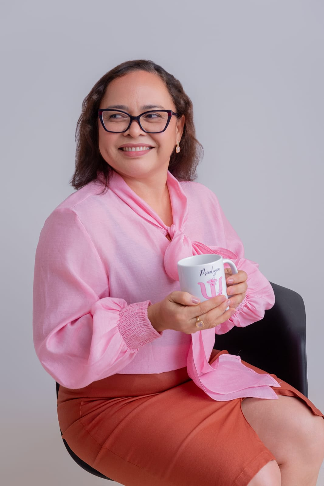

01
Carrega experiências difíceis
Sente que algo vivido no passado ainda impacta sua vida no presente.
Ajudo adultos e jovens adultos a superarem traumas emocionais e reconstruir sua segurança interna.
Algumas marcas do trauma aparecem de forma silenciosa no corpo, no sono, nas emoções e na forma como você se vê. Quando isso acontece, existe um caminho possível de cuidado e transformação.
Sente que algo vivido no passado ainda impacta sua vida no presente.
Percebe o sono leve, despertares frequentes ou noites marcadas por medo e tensão.
Reage com ansiedade, irritação, medo ou desconforto em situações específicas.
Convive com autocrítica intensa, sensação de inadequação ou dificuldade de reconhecer seu valor.
Passa por travas internas que parecem difíceis de explicar ou de mudar sozinha(o).
Procura um espaço seguro para reorganizar a vida emocional com mais autonomia e segurança.
Com base em evidências científicas e em um processo terapêutico profundo, o cuidado com o trauma pode gerar mudanças concretas na sua vida emocional.
Mais clareza e menos intensidade emocional diante das lembranças difíceis.
Mais descanso, menos tensão e noites menos impactadas pelo trauma.
Fortalecimento da estabilidade interna e da percepção de proteção.
Trabalho terapêutico para integrar experiências marcantes de forma mais saudável.
Menos estado de alerta e mais presença na vida cotidiana.
Reconstrução da relação consigo mesma(o) com mais dignidade e compaixão.
Mais recursos internos para lidar com desafios e emoções difíceis.
O corpo também pode encontrar mais calma, regulação e descanso.
Se essas experiências fazem sentido para você, esse pode ser o momento de começar um processo terapêutico com segurança e profundidade.
O atendimento acontece com a mesma ética, profundidade e cuidado de um processo terapêutico presencial. A proposta é oferecer um espaço seguro para que sua história seja vista, acolhida e trabalhada com humanidade.
A frequência mínima é de uma sessão por semana, podendo variar de acordo com as necessidades e possibilidades de cada caso.
As sessões acontecem por videochamada, em ambiente reservado, com sigilo e respeito ao seu processo.
Com conforto, praticidade e continuidade do processo terapêutico.
Tempo estruturado para escuta, aprofundamento e intervenção clínica.
Plataformas seguras e acessíveis para os encontros terapêuticos.
Uma base consistente para evolução emocional com responsabilidade.
Se você busca um espaço seguro para compreender o que sente e reorganizar sua vida emocional, posso caminhar com você nesse processo.
Na minha prática, o foco é oferecer um espaço em que você possa finalmente respirar, se ouvir e se reorganizar com mais segurança interna.
O EMDR é um método terapêutico reconhecido mundialmente pela sua eficácia no tratamento de traumas, ansiedade intensa e memórias que ficaram “presas” no sistema emocional.
A terapia EMDR é reconhecida pelo Conselho Federal de Psicologia como uma prática científica e ética desde 2025.
É reconhecida pela OMS - Organização Mundial da Saúde e a APA - Associação Americana de Psicologia.
Para reprocessamento de memórias traumáticas e experiências emocionalmente marcantes.
Com olhar profundo para os impactos do passado na vida emocional atual.
Ferramentas para compreender o que acontece com você e lidar melhor com isso.
Porque o trauma não marca apenas a memória — ele atravessa a vida inteira.

Minha trajetória na psicologia começou há mais de 20 anos, atuando como psicóloga clínica. Ao longo dessa caminhada, me especializei em EMDR, uma abordagem profunda e transformadora para a superação de traumas.
Minha escolha pelo trabalho com traumas psicológicos vai além da teoria ou da experiência profissional. Ela também nasce de um lugar íntimo: eu vivi um trauma intenso e sei como o passado pode aprisionar, ferir a autoestima e afastar a esperança.
Mas também sei que a transformação é possível. Com força interna, aprendizado e ressignificação, é possível reconstruir a própria história e viver com mais leveza, segurança e autonomia emocional.
A terapia não é sobre apagar o que aconteceu. É sobre integrar, ressignificar e seguir vivendo de forma mais inteira. E acima de tudo, acredito que você merece ser cuidada(o) com respeito, dignidade e humanidade.
Aqui, sua história é vista, respeitada e tratada com cuidado. O objetivo não é negar a dor, mas construir um caminho possível de cura, reorganização emocional e retomada da sua vida.
Descubra como o trauma afeta suas noites e aprenda técnicas simples e eficazes para melhorar o seu sono.
👉 Dê o primeiro passo para cuidar de você.
Esses depoimentos ilustram como um espaço terapêutico seguro pode contribuir para mudanças profundas na forma de sentir, dormir, se perceber e seguir em frente.
"Ao longo do processo terapêutico com EMDR, pude perceber mudanças importantes na forma como compreendo e lido com minhas emoções. Hoje me sinto mais consciente dos meus sentimentos e mais preparado(a) para enfrentar situações desafiadoras do dia a dia."
Relato preservado em sigilo"A experiência com a terapia EMDR contribuiu para que eu desenvolvesse mais segurança emocional, paciência e foco no meu cotidiano. Ao longo do processo, fui percebendo mudanças na forma de lidar com a ansiedade e com diferentes situações da minha vida."
Relato preservado em sigilo"Durante o processo terapêutico, percebi avanços significativos no meu desenvolvimento emocional. Uma das principais mudanças foi na minha comunicação, conseguindo expressar melhor meus sentimentos e opiniões nas minhas relações."
Relato preservado em sigilo"Ao longo da terapia, fui desenvolvendo mais segurança para me expressar e lidar com diferentes situações do dia a dia. Percebo mudanças importantes na forma como me posiciono e tomo decisões".
Relato preservado em sigilo"No início do acompanhamento, eu me encontrava emocionalmente fragilizada, com dificuldades para dormir e fazendo uso de medicação. Ao longo dos meses de psicoterapia, fui gradualmente compreendendo melhor minhas emoções e vivências, o que trouxe mais clareza sobre minha história. Durante o processo, tive contato com a técnica de EMDR, que foi utilizada no trabalho de questões relacionadas a experiências difíceis, inclusive em relacionamentos afetivos. Um momento marcante aconteceu durante uma viagem de trabalho, quando me senti desamparada em uma situação inesperada. Apesar do impacto emocional, consegui recorrer ao recurso do ‘lugar seguro’, aprendido em sessão, o que me ajudou a encontrar um pouco mais de estabilidade naquele momento. Com o andamento do processo terapêutico, percebo que desenvolvi mais recursos para lidar com minhas emoções, medos e ansiedade, o que contribuiu significativamente para minha qualidade de vida. Hoje me sinto mais consciente de mim mesma, com maior equilíbrio emocional e mais conectada com a minha própria história."
Relato preservado em sigiloÉ completamente normal ter dúvidas antes de dar o primeiro passo. Aqui estão algumas das perguntas que costumam surgir com mais frequência.
Esse modelo não me permitiria oferecer o nível de qualidade, profundidade e resultado que considero inegociável no meu trabalho. No entanto, envio recibo para que você possa solicitar o reembolso junto ao seu plano de saúde.
O tempo de tratamento depende do nível de dificuldade das suas demandas, do seu comprometimento com o processo terapêutico e da frequência das sessões. Todo o plano de intervenção é pensado para ter início, meio e fim.
Os encontros acontecem por videochamada, através do Google Meet ou Zoom. Cada sessão tem duração de 50 minutos. Você só precisa estar em um local com privacidade, conexão estável e, de preferência, utilizando fone de ouvido para preservar o sigilo.
Os valores seguem a tabela de honorários do Conselho Federal de Psicologia. Há opção de pagamento por sessão ou por pacote à vista, com condição diferenciada.
Sim. O atendimento online acontece com a mesma seriedade, ética, profundidade e cuidado de um processo terapêutico presencial, mantendo a qualidade clínica do acompanhamento.
Sim. Justamente por oferecer mais praticidade, flexibilidade e continuidade, o atendimento online costuma se adaptar melhor a rotinas intensas, viagens e mudanças do dia a dia.
Existe um caminho possível, seguro e acolhedor. Se você sente que chegou a hora de cuidar da sua saúde emocional com profundidade e respeito, estou aqui para caminhar ao seu lado.
CRP 20/02335 • Atendimento online para todo o Brasil • Adultos e jovens adultos